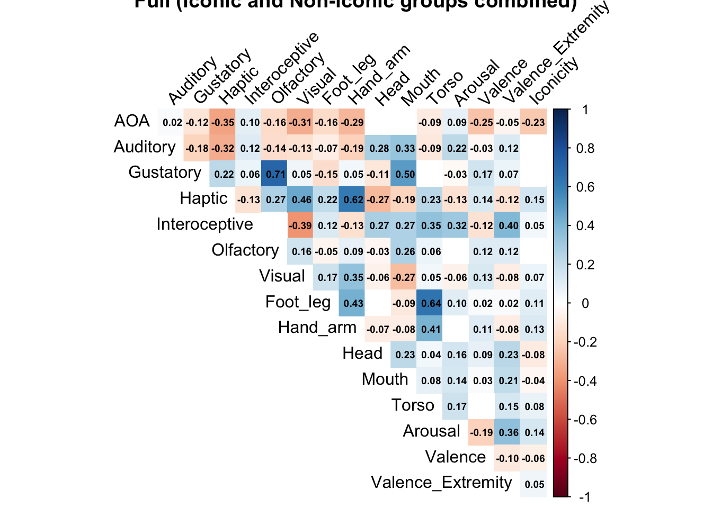

knitr::opts_chunk$set(
echo = TRUE,
warning = FALSE, # hide warnings
message = FALSE, # hide messages
error = FALSE # hide errors
)
#list of packages (Diveica et al., 2025)
packages <- c("tidyverse", "bootnet", "NetworkComparisonTest", "qgraph", "igraph", "papaja", "ggcorrplot", "rstatix", "psych", "ggrepel", "ggExtra")
#load each package
for (pkg in packages) {
library(pkg, character.only = TRUE, quietly=TRUE)
}
# notin operator (Diveica et al, 2025)
'%notin%' <- negate('%in%')main analysis
The Multisensory Networks of Iconic Language
Load packages
R environment, version info for reproducibility
sessionInfo() R version 4.5.1 (2025-06-13)
Platform: aarch64-apple-darwin20
Running under: macOS Tahoe 26.6.2
Matrix products: default
BLAS: /Library/Frameworks/R.framework/Versions/4.5-arm64/Resources/lib/libRblas.0.dylib
LAPACK: /Library/Frameworks/R.framework/Versions/4.5-arm64/Resources/lib/libRlapack.dylib; LAPACK version 3.12.1
locale:
[1] en_US.UTF-8/en_US.UTF-8/en_US.UTF-8/C/en_US.UTF-8/en_US.UTF-8
time zone: America/New_York
tzcode source: internal
attached base packages:
[1] stats graphics grDevices utils datasets methods base
other attached packages:
[1] ggExtra_0.11.0 ggrepel_0.9.8
[3] psych_2.6.5 rstatix_1.1.0
[5] ggcorrplot_0.3.0 papaja_0.1.5
[7] tinylabels_0.2.5 igraph_2.3.3
[9] qgraph_1.10.1 NetworkComparisonTest_2.2.3
[11] bootnet_1.9.1 lubridate_1.9.5
[13] forcats_1.0.1 stringr_1.5.1
[15] dplyr_1.2.0 purrr_1.2.1
[17] readr_2.2.0 tidyr_1.3.2
[19] tibble_3.3.1 ggplot2_4.0.2
[21] tidyverse_2.0.0
loaded via a namespace (and not attached):
[1] mathjaxr_2.0-0 RColorBrewer_1.1-3 rstudioapi_0.18.0
[4] jsonlite_2.0.0 shape_1.4.6.1 datawizard_1.4.0
[7] magrittr_2.0.5 estimability_2.0.0 jomo_2.7-6
[10] farver_2.1.2 nloptr_2.2.1 rmarkdown_2.31
[13] vctrs_0.7.2 minqa_1.2.8 effectsize_1.0.3
[16] base64enc_0.1-6 htmltools_0.5.9 polynom_1.4-1
[19] plotrix_3.8-14 weights_1.1.2 broom_1.0.13
[22] Formula_1.2-5 mitml_0.4-5 htmlwidgets_1.6.4
[25] plyr_1.8.9 emmeans_2.0.4 mime_0.13
[28] lifecycle_1.0.5 iterators_1.0.14 pkgconfig_2.0.3
[31] Matrix_1.7-3 R6_2.6.1 fastmap_1.2.0
[34] shiny_1.13.0 rbibutils_2.4.1 digest_0.6.37
[37] fdrtool_1.2.18 colorspace_2.1-2 Hmisc_5.3-0
[40] ellipse_0.5.0 timechange_0.4.0 nnls_1.6
[43] gdata_3.0.1 abind_1.4-8 IsingSampler_0.5.0
[46] compiler_4.5.1 proxy_0.4-29 withr_3.0.2
[49] doParallel_1.0.17 glasso_1.11 htmlTable_2.5.0
[52] S7_0.2.1 backports_1.5.1 carData_3.0-6
[55] mgm_1.2-15 R.utils_2.13.0 pan_2.0
[58] MASS_7.3-65 corpcor_1.6.10 gtools_3.9.5
[61] tools_4.5.1 pbivnorm_0.6.0 foreign_0.8-90
[64] otel_0.2.0 httpuv_1.6.17 nnet_7.3-20
[67] R.oo_1.27.1 glue_1.8.0 quadprog_1.5-8
[70] NetworkToolbox_1.4.4 promises_1.5.0 nlme_3.1-168
[73] grid_4.5.1 checkmate_2.3.4 cluster_2.1.8.1
[76] reshape2_1.4.5 generics_0.1.4 snow_0.4-4
[79] gtable_0.3.6 tzdb_0.5.0 R.methodsS3_1.8.2
[82] class_7.3-23 data.table_1.18.2.1 hms_1.1.4
[85] car_3.1-5 foreach_1.5.2 pillar_1.11.1
[88] later_1.4.8 splines_4.5.1 smacof_2.1-7
[91] networktools_1.6.0 lattice_0.22-7 survival_3.8-3
[94] tidyselect_1.2.1 miniUI_0.1.2 pbapply_1.7-5
[97] knitr_1.51 reformulas_0.4.4 gridExtra_2.3.1
[100] IsingFit_0.4 stats4_4.5.1 xfun_0.60
[103] stringi_1.8.7 yaml_2.3.10 boot_1.3-31
[106] evaluate_1.0.4 codetools_0.2-20 wordcloud_2.6
[109] cli_3.6.5 mantar_0.3.1 rpart_4.1.24
[112] xtable_1.8-8 parameters_0.29.3 Rdpack_2.6.6
[115] lavaan_0.7-2 Rcpp_1.1.1 coda_0.19-4.1
[118] png_0.1-9 parallel_4.5.1 bayestestR_0.19.0
[121] jpeg_0.1-11 lme4_2.0-1 glmnet_5.0
[124] mvtnorm_1.3-6 scales_1.4.0 e1071_1.7-17
[127] insight_1.5.4 eigenmodel_1.12 rlang_1.2.0
[130] mnormt_2.1.2 mice_3.19.0 Load datasets
setwd('/Users/ailani/Projects/iconic-network-analysis/data/')
AOA <- read_csv('kuperman_2012_AOA.csv')
lanc <- read_csv('Lancaster_sensorimotor_norms_for_39707_words.csv')
emot <- read_csv('warriner_2013_affective_norms.csv')
icon <- read_csv("winter_2024_iconicity_ratings_cleaned.csv")Select relevant columns from each dataset
AOA <- AOA %>% select(Word, Rating.Mean) %>%
rename(AOA = Rating.Mean)
lanc <- lanc %>% select(Word, Auditory.mean:Torso.mean) %>%
mutate(Word = tolower(Word)) %>%
rename_with(~ str_remove(.x, "\\.mean"), Auditory.mean:Torso.mean)
emot <- emot %>% select(Word, A.Mean.Sum, V.Mean.Sum) %>%
mutate(Valence_Extremity = abs(V.Mean.Sum - 5)) %>% # Get the valence extremity value
mutate(Valence = V.Mean.Sum) %>% # Including normal valence scores as well
rename(Arousal = A.Mean.Sum) %>%
select(Word, Arousal, Valence, Valence_Extremity)
icon <- icon %>% select(word, rating, rating_sd) %>% #make sure if rating is right column
rename(Word = word, Iconicity = rating, Iconicity_SD = rating_sd) Join each dimension ratings to full dataset
df <- reduce(list(AOA, lanc, emot, icon), inner_join, by = "Word")See how many words overlapped
nrow(df)[1] 10473There are 10473 overlapping words across all the data sets representing the properties of interest.
Creating Iconic and Non-iconic Word Groups
Split into two data frames: one with high iconicity words and another with low iconicity (more arbitrary) words. For lack of conventions in iconicity literature, use tertile split. I will also filter to include only iconic rating SDs that are equal to or lower than 1.5, following De Zubicaray & Hinojosa (2026), to make sure iconic ratings have reasonable inter-rater agreement (Pollock, 2018).
# Find the tertile cutoffs on iconicity ratings
tertiles <- quantile(df$Iconicity, probs= c(1/3, 2/3), na.rm=TRUE)
cut_low <- tertiles[1]
cut_high <- tertiles[2]
# Split into high-iconicity and low-iconicity word groups, filtering for lower SD in iconicity ratings
high_iconic <- df %>% filter(Iconicity >= cut_high) %>%
filter(Iconicity_SD <= 1.5)
low_iconic <- df %>% filter(Iconicity <= cut_low) %>%
filter(Iconicity_SD <= 1.5)Check size of the two groups:
nrow(high_iconic)[1] 771nrow(low_iconic)[1] 847There are fewer high_iconic words (771) than low_iconic (847), so match to high_iconic
n_match <- min(nrow(high_iconic), nrow(low_iconic))
high_iconic <- high_iconic %>%
arrange(desc(Iconicity)) %>%
slice_head(n=n_match) %>%
mutate(Iconic = "Iconic")
low_iconic <- low_iconic %>%
arrange(Iconicity) %>%
slice_head(n=n_match) %>%
mutate(Iconic = "Non-iconic")Check if the rows of the split data sets are equal, along with their respective means and ranges
# Check
nrow(high_iconic) == nrow(low_iconic)[1] TRUEmean(high_iconic$Iconicity); range(high_iconic$Iconicity); sd(high_iconic$Iconicity)[1] 5.200006[1] 4.166667 6.923077[1] 0.6607482mean(low_iconic$Iconicity); range(low_iconic$Iconicity); [1] 2.596827[1] 1.30 3.25sd(low_iconic$Iconicity)[1] 0.4050571Also get the mean of the SDs (inter-rater variability) for each group
high_iconic %>% summarise(mean_sd = mean(Iconicity_SD, na.rm=TRUE))# A tibble: 1 × 1
mean_sd
<dbl>
1 1.22low_iconic %>% summarise(mean_sd = mean(Iconicity_SD, na.rm=TRUE))# A tibble: 1 × 1
mean_sd
<dbl>
1 1.28df %>% summarise(mean_SD_full = mean(Iconicity_SD, na.rm=TRUE))# A tibble: 1 × 1
mean_SD_full
<dbl>
1 1.82Now, both high iconic group and low iconic group have same number of words: 771.
The mean iconicity of the high_iconic set is 5.20, SD = 0.66, and the range is 4.17-6.92.
The mean iconicity of the low_iconic set is 2.59, SD = 0.41, and the range is 1.30 - 3.25.
Mean inter-rater SD was 1.22 for high_iconic and 1.28 for low_iconic. The full dataset mean SD of 1.82.
# Checking what the SD of the middle of the dataset (middle iconic ratings) looks like
t.test(df$Iconicity_SD, mu = 1.775) # 1.775 = combined High/Low mean, adjust as needed
One Sample t-test
data: df$Iconicity_SD
t = 11.57, df = 10472, p-value < 2.2e-16
alternative hypothesis: true mean is not equal to 1.775
95 percent confidence interval:
1.808825 1.822624
sample estimates:
mean of x
1.815725 middle_icon_words <- df %>%
filter(Iconicity > cut_low, Iconicity < cut_high)
mean(middle_icon_words$Iconicity_SD, na.rm = TRUE)[1] 1.931739Combine the split data sets into one (removing the middle iconicity words)
#Remove Iconicity ratings from high_iconic and low_iconic
high_iconic <- high_iconic %>% select(-Iconicity, -Iconicity_SD)
low_iconic <- low_iconic %>% select(-Iconicity, -Iconicity_SD)
data_both <- bind_rows(high_iconic, low_iconic) %>%
select(Word, Iconic, everything()) %>%
mutate(Iconic = factor(Iconic, levels = c("Iconic", "Non-iconic")))Univariate group comparison of semantic dimensions between high iconic vs low iconic words. Adjust for multiple comparisons with Bonferroni correction (following Diveica et al., 2025).
# t-tests to compare ratings between high-iconic vs low-iconic
stat_test <- data_both %>%
tidyr::pivot_longer(3:ncol(data_both), names_to = "Measure", values_to = "Rating") %>%
dplyr::group_by(Measure) %>%
rstatix::t_test(Rating ~ Iconic) %>%
rstatix::adjust_pvalue(p.col = "p", method = "bonferroni") %>%
rstatix::add_significance(p.col = "p.adj") %>%
dplyr::select(Measure, statistic, p, p.adj, p.adj.signif) %>%
dplyr::ungroup()
# Add effect sizes with Cohen's d
effect_sizes <- data_both %>%
tidyr::pivot_longer(3:ncol(data_both), names_to = "Measure", values_to = "Rating") %>%
dplyr::group_by(Measure) %>%
rstatix::cohens_d(Rating ~ Iconic) %>%
as.data.frame() %>%
dplyr::select(effsize, magnitude) %>%
dplyr::ungroup()Combining descriptive statistics with effect sizes into a results table.
descript <- data_both %>%
tidyr::pivot_longer(3:ncol(data_both), names_to = "Measure", values_to = "Rating")%>%
dplyr::group_by(Measure, Iconic) %>%
dplyr::summarise(Mean=mean(Rating), SD = sd(Rating), Skew= psych::skew(Rating), Kurtosis = psych::kurtosi(Rating)) %>%
mutate('Mean Score (SD)' = paste0(sprintf("%.2f", Mean), " (", sprintf("%.2f", SD), ")")) %>%
select(-Mean, -SD) %>%
tidyr::pivot_wider(names_from = Iconic, values_from = c('Mean Score (SD)', Skew, Kurtosis))
#generate results table
result_table <- dplyr::bind_cols(descript %>%
select(Measure, starts_with("Mean")),
stat_test %>% dplyr::select(-Measure), effect_sizes) %>%
dplyr::arrange(dplyr::desc(effsize))Visualize the differences with violin plots
# Build plot of dimension-based ratings for high-iconic and low-iconic words, annotating by effect size
# Long form of data
dat <- data_both %>%
tidyr::pivot_longer(3:ncol(data_both), names_to = "Measure", values_to= "Rating")
dat <- left_join(dat, result_table %>%
dplyr::select(Measure, effsize), by = "Measure") %>%
dplyr::mutate(Measure = factor(Measure, levels=result_table$Measure),
Iconic = factor(Iconic, levels = c("Iconic", "Non-iconic")))
# Violin Plot Formatting
fig1 <- ggplot2::ggplot(dat,
aes(x = Iconic, y = Rating, split=Iconic, fill= Iconic)) +
ggplot2::geom_violin(position="identity", alpha=0.5, aes(color = Iconic)) +
ggplot2::stat_summary(
fun.data = "mean_cl_normal", fun.args = list(conf.int = .99),
geom = "errorbar", linewidth = 1,
width = .2
) +
ggplot2::geom_text(aes(label = paste0("d = ", format(effsize, digits = 2)), x = 1.5, y = Inf),
vjust = 1.5, hjust = 0.5, size = 3, color = "black", inherit.aes = FALSE
) +
ggplot2::stat_summary(fun = "mean", geom = "point") +
ggplot2::stat_summary(fun = "mean", geom = "line", aes(group = 1), linetype = "dashed") +
ggplot2::facet_wrap(vars(Measure), ncol = 4, scales = "free_y",
labeller = labeller(Measure = c("Iconicity_val" = "Iconicity"))) +
ggplot2::scale_fill_manual(values = c("#3160d7", "#ed968c")) +
ggplot2::scale_colour_manual(values = c("#3160d7", "#ed968c")) +
ggplot2::labs(x="", y="Score") +
ggplot2::theme(axis.text.x = element_blank(), axis.ticks.x = element_blank(), axis.line.x = element_blank()) +
ggplot2::scale_y_continuous(breaks = scales::pretty_breaks(n = 3))fig1
papaja::apa_table(result_table)| Measure | Mean Score (SD)_Iconic | Mean Score (SD)_Non-iconic | statistic | p | p.adj | p.adj.signif | effsize | magnitude |
|---|---|---|---|---|---|---|---|---|
| Haptic | 1.48 (1.08) | 0.98 (0.86) | 9.84 | 0.00 | 0.00 | **** | 0.50 | moderate |
| Hand_arm | 1.79 (1.06) | 1.34 (0.79) | 9.53 | 0.00 | 0.00 | **** | 0.49 | small |
| Arousal | 4.38 (0.89) | 4.02 (0.80) | 8.28 | 0.00 | 0.00 | **** | 0.42 | small |
| Foot_leg | 1.05 (0.91) | 0.73 (0.63) | 7.82 | 0.00 | 0.00 | **** | 0.40 | small |
| Torso | 0.99 (0.72) | 0.78 (0.63) | 6.08 | 0.00 | 0.00 | **** | 0.31 | small |
| Valence_Extremity | 1.10 (0.76) | 0.93 (0.69) | 4.45 | 0.00 | 0.00 | *** | 0.23 | small |
| Visual | 3.06 (0.93) | 2.87 (0.91) | 3.88 | 0.00 | 0.00 | ** | 0.20 | negligible |
| Interoceptive | 1.19 (1.00) | 1.04 (0.87) | 3.17 | 0.00 | 0.02 | * | 0.16 | negligible |
| Olfactory | 0.49 (0.78) | 0.43 (0.62) | 1.48 | 0.14 | 1.00 | ns | 0.08 | negligible |
| Gustatory | 0.39 (0.76) | 0.39 (0.79) | -0.11 | 0.92 | 1.00 | ns | -0.01 | negligible |
| Auditory | 1.61 (1.19) | 1.69 (1.00) | -1.47 | 0.14 | 1.00 | ns | -0.07 | negligible |
| Mouth | 1.33 (1.05) | 1.43 (0.89) | -1.88 | 0.06 | 0.91 | ns | -0.10 | negligible |
| Head | 2.23 (0.77) | 2.40 (0.71) | -4.30 | 0.00 | 0.00 | *** | -0.22 | small |
| Valence | 4.82 (1.32) | 5.18 (1.15) | -5.84 | 0.00 | 0.00 | **** | -0.30 | small |
| AOA | 8.21 (2.22) | 9.94 (2.53) | -14.20 | 0.00 | 0.00 | **** | -0.72 | moderate |
Correlation martix for full data set
library(dplyr)
cor_data <- df %>%
select(2:(ncol(df)-1))
cor_matrix <- cor(cor_data, use="pairwise.complete.obs", method = "pearson")
# get p-values for correlations
library(Hmisc)
rcorr_result <- rcorr(as.matrix(cor_data), type = "pearson")
#rcorr_result$r # correlation coefficients
#rcorr_result$P # p-values
# Visualize
library(corrplot)
corrplot(cor_matrix,
method = "color",
type = "upper",
#order = "hclust",
p.mat = rcorr_result$P,
sig.level = 0.05,
insig = "blank", # blank out non-significant cells
addCoef.col = "black",
number.cex = 0.6,
tl.col = "black",
title = "Full (Iconic and Non-iconic groups combined)",
tl.srt = 45,
diag = FALSE)
Separate correlation matrices for high vs low iconic groups
Independent Networks
Estimate the partial correlation networks.
Select rows that will be used as nodes (remove Word, Iconic) from high_iconic and low_iconic data frames.
nrow(high_iconic) == nrow(low_iconic)[1] TRUEhigh_iconic <- high_iconic %>%
select(-Word, -Iconic)
low_iconic <- low_iconic %>%
select(-Word, -Iconic)
# variable to store label names of nodes
names <- as.list(names(low_iconic))Estimate network for each group, using bootnet package.
Create partial correlation plots
Combined Partial Correlation Plots
Upper triangle is the partial correlations of high_iconic group, while the lower triangle is the pcorrs of the low_iconic group.
# Combine the partial correlation plots into one [COME BACK LATER]
combined_matrix <- pcor_high # Use high_iconic as base
combined_matrix[upper.tri(combined_matrix)] <- pcor_low[upper.tri(pcor_low)] #fill upper with low_iconic corrplot
pc_corrplot <- ggcorrplot(
combined_matrix, # combined partial correlation plot
type = "full",
legend.title = "Partial r",
show.diag = TRUE,
outline.col = "white",
lab = TRUE, # display correlation coef
lab_size = 2,
tl.cex = 8, # size of text labels on axes
tl.col = "black",
hc.order = FALSE
)
pc_corrplot
High Iconicity Network
Summary of network for high_iconic
summary(net_high)
=== Estimated network ===
Number of nodes: 15
Number of non-zero edges: 56 / 105
Mean weight: 0.02149089
Network stored in object$graph
Default set used: EBICglasso
Use plot(object) to plot estimated network
Use bootnet(object) to bootstrap edge weights and centrality indices
Relevant references:
Friedman, J. H., Hastie, T., & Tibshirani, R. (2008). Sparse inverse covariance estimation with the graphical lasso. Biostatistics, 9 (3), 432-441.
Foygel, R., & Drton, M. (2010). Extended Bayesian information criteria for Gaussian graphical models.
Friedman, J. H., Hastie, T., & Tibshirani, R. (2014). glasso: Graphical lasso estimation of gaussian graphical models. Retrieved from https://CRAN.R-project.org/package=glasso
Epskamp, S., Cramer, A., Waldorp, L., Schmittmann, V. D., & Borsboom, D. (2012). qgraph: Network visualizations of relationships in psychometric data. Journal of Statistical Software, 48 (1), 1-18.
Epskamp, S., Borsboom, D., & Fried, E. I. (2018). Estimating psychological networks and their accuracy: a tutorial paper. Multivariate Behavioral Research, 50(1), 195-212.plot(net_high, layout = "circle", label.scale = FALSE, title = "High Iconicity Network")
corrplot::corrplot(
pcor_high,
method = "color",
type="upper",
addCoef.col = "black",
tl.col = "black",
number.cex = 0.5,
tl.srt = 45,
diag = FALSE,
mar = c(0,0,2,0),
title = "High Iconicity: Partial Correlations"
) 
Low Iconicity Network
Summary of network for low_iconic
summary(net_low)
=== Estimated network ===
Number of nodes: 15
Number of non-zero edges: 68 / 105
Mean weight: 0.03745364
Network stored in object$graph
Default set used: EBICglasso
Use plot(object) to plot estimated network
Use bootnet(object) to bootstrap edge weights and centrality indices
Relevant references:
Friedman, J. H., Hastie, T., & Tibshirani, R. (2008). Sparse inverse covariance estimation with the graphical lasso. Biostatistics, 9 (3), 432-441.
Foygel, R., & Drton, M. (2010). Extended Bayesian information criteria for Gaussian graphical models.
Friedman, J. H., Hastie, T., & Tibshirani, R. (2014). glasso: Graphical lasso estimation of gaussian graphical models. Retrieved from https://CRAN.R-project.org/package=glasso
Epskamp, S., Cramer, A., Waldorp, L., Schmittmann, V. D., & Borsboom, D. (2012). qgraph: Network visualizations of relationships in psychometric data. Journal of Statistical Software, 48 (1), 1-18.
Epskamp, S., Borsboom, D., & Fried, E. I. (2018). Estimating psychological networks and their accuracy: a tutorial paper. Multivariate Behavioral Research, 50(1), 195-212.plot(net_low, layout = "circle",label.scale = FALSE, title = "Low Iconicity Network")
corrplot::corrplot(
pcor_low,
method = "color",
type="upper",
addCoef.col = "black",
tl.col = "black",
number.cex = 0.5,
tl.srt = 45,
diag = FALSE,
mar = c(0,0,2,0),
title = "Low Iconicity: Partial Correlations"
)
Create centrality figure
centralityPlot(list(High = net_high, Low = net_low), include = c("Strength"), decreasing = FALSE, orderBy = "Strength", scale="raw", theme_bw = TRUE)
Centrality Table
Bootstrap Stability
# compare networks directly
#nct_result <- NCT(high_iconic, low_iconic, it = 10000,
# test.edges = TRUE, edges = "all",
# test.centrality = TRUE, centrality = "strength",
# p.adjust.methods = "BH")